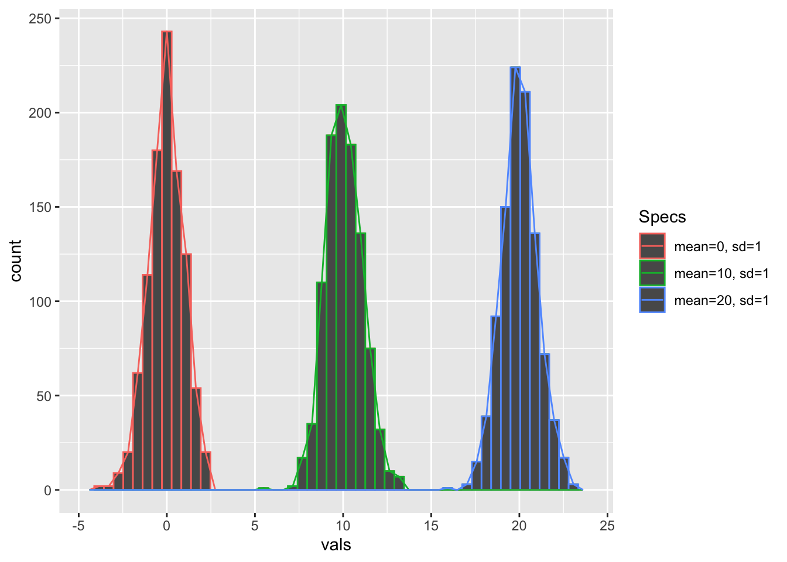
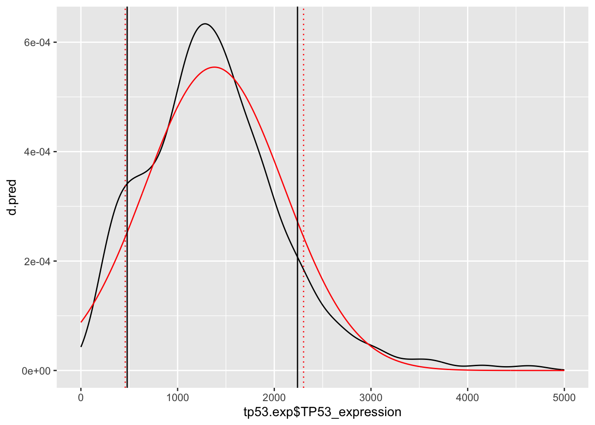
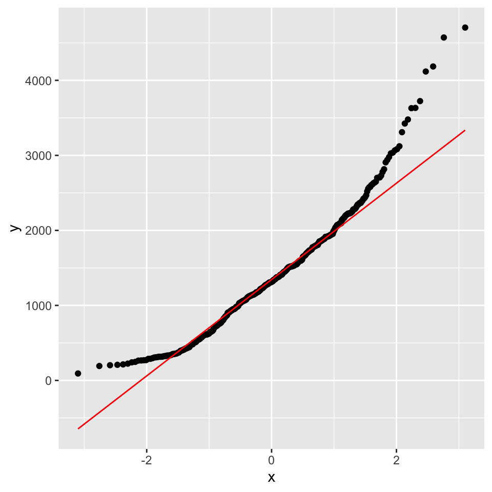

3 WEEK 1: Probability distributions
3.1 Probability distributions
In the previous Exercise Sheet we have learnt more about unsupervised learning, like hierarchical clustering and especially PCA. These are among the fundamental methods of Data Analysis. Today we will learn more about another milestone of statistics: probability distributions.

Distributions represented by sparse lines represent outcomes which will be discrete (for example the roll of dice will always have discrete integer values from 1 to 6). Distributions represented by dense lines represent outcomes which can be continuous i.e real numbers (for example the height of people living in Heidelberg).
R has in-built functions for almost all probability distributions
All of these functions for probability distributions follow the same common scheme, the root name of the function prefixed by either of p, d, q and r. For example for the Normal distribution we have the four variants of function available - pnorm, dnorm, qnorm and rnorm.
Here, you can find some specific help on these functions:
In the respective help documentation, you will find details on each of the functions.
Probably, the most difficult to distinguish or to remember are pnorm() and qnorm() (respectively ppois() and qpois(), etc …).
We are going to look at them more deeply in the following.
3.1.1 Getting to know the various functions
Let us get a grasp of what these functions actually do. You should be familiar with the cumulative distribution function, let’s take a look at that and its inverse first. We will work with a Normal distribution. We calculate the cumulative probability for the values 1,2,3,4 in three different distributions, using one of the functions described previously.
Short hint: p like cumulative P-robability. Which function are you going to use?
## [1] 0.1586553 0.5000000 0.8413447 0.9772499## [1] 0.3085375 0.5000000 0.6914625 0.8413447## [1] 0.001349898 0.022750132 0.158655254 0.500000000Do you understand why the cumulative distribution functions change the way they do?
Now, on the same distributions, we calculate the inverse cdf (inverse cumulative distribution function) for the cumulative probabilities of 25%, 50% and 75%. We use the qnorm() function for this (q- like quantile):
## [1] 1.32551 2.00000 2.67449## [1] 0.6510205 2.0000000 3.3489795## [1] 3.32551 4.00000 4.67449Try with 100% on any of the distributions. Can you explain this result? Do you expect the result to be different in the other ones?
Now that you know the output of the p- and q- functions, let’s look at d- like density probability functions. For any continuous distribution, the value of the function at any specific value is 0. This is why this probability function is used in discrete distribution such as the binomial distribution (function dbinom()). We first calculate the probability of getting 5 events out of 5 in a binomial distribution with a probability of 0.5. Then, we calculate the odds of not getting 5 out of 5.
## [1] 0.03125# size = number of trials; prob = probability of success on each trial
# probability of NOT getting 5 out of 5
1-dbinom(5, size=5, prob=0.5)## [1] 0.96875## [1] 0.96875What is the probability of getting 5 out of 10? And NOT getting 5 out of 10?
Suppose that the distribution of body height is described by a normal distribution with mean = 1.75 m and standard deviation sd = 0.15. What is the probability that someone is taller than 1.9 m? We can use the parameter lower.tail of the function pnorm() for this.
What is the probability that someone is smaller than 1.60m?
## [1] 0.1586553## [1] 0.1586553## [1] 0.1586553## [1] 0.1586553# because: per defaults, lower.tail is set to TRUE (you can check the help page for further information using `?pnorm`)Let’s have a look at this distribution using the dnorm() function:
x = seq(1, 2.5, by=0.01)
y = dnorm(x, mean=1.75, sd=0.15)
plot(x, y, type='l',col='red',lwd=2);abline(v=c(1.6,1.9),lty=3,lwd=2)
Let’s finally look at r- like random functions. These, unlike the others, don’t return single probabilities or values but rather generate a random distribution of values. We can use this to generate a normal distribution with mean = 10, sd = 5.
Can you generate a Poisson distribution and a binomial distribution?
3.1.2 Normal/Gaussian distribution
The normal or the Gaussian distribution is given as:
\[P(x) = \frac{1}{{\sigma \sqrt {2\pi } }} \cdot e ^ \frac{-(x- \mu)^2}{{2\sigma ^2 }} \] where \(\mu\) is the mean of the distribution and \(\sigma\) is the standard deviation.
The standard normal distribution is a special case of normal distribution where the values for \(\mu = 0\) and \(\sigma = 1\). Thus, the above equation for the Normal distribution simplifies to:
\[P(x) = \frac{1}{{\sqrt {2\pi } }} \cdot e ^ \frac{-x^2}{2} \] Now for any \(x\) we can easily solve this equation since \(\pi\) and \(e\) are known constants.
3.1.3 Visualization
Let’s generate three random normal distributions with different means and standard deviations and visualize them together
## Use the function `dnorm()` to plot the density distribution
x = seq(-10, 30, by=.1)
d1 = dnorm(x, mean=0, sd=1)
d2 = dnorm(x, mean=10, sd=1)
d3 = dnorm(x, mean=20, sd=1)
# Compare with the histogram build from 1000 random number drawn from the standard normal distribution
r1 = rnorm(n=1000, mean=0, sd =1) # random distributions of values
r2 = rnorm(n=1000, mean=10, sd=1)
r3 = rnorm(n=1000, mean=20, sd=1)
# Histogram visualization
# We will start by converting the rnorm outputs into one single df
data.frame(vals = c(r1, r2, r3), # column vals is actual numbers
Specs = c(rep("mean=0, sd=1", 1000), # column Specs is mean/sd
rep("mean=10, sd=1", 1000),
rep("mean=20, sd=1", 1000))
) %>%
ggplot(aes(x = vals,
colour = Specs)) +
geom_histogram(bins = 50) +
geom_freqpoly(bins = 50) # geom_freqpoly adds in the line on top of the histogram
Play with the mean and sd parameters and visualize the distributions (plain lines) as well as the corresponding histograms.
3.1.4 Application on a real dataset
Now we will use the Normal distribution to make predictions about gene expression of TP53 in lung cancer. TP53 is the most commonly mutated gene across multiple cancer types especially in lung cancers. We will read a table (import) containing measurements of TP53 expression levels in 586 patients.
tp53.exp = read.table("https://www.dropbox.com/s/rwopdr8ycmdg8bd/TP53_expression_LungAdeno.txt?dl=1",
header=T, sep="\t")[,1:2]
summary(tp53.exp)## Samples TP53_expression
## Length:586 Min. : 92.6
## Class :character 1st Qu.: 911.8
## Mode :character Median :1313.3
## Mean :1380.8
## 3rd Qu.:1778.1
## Max. :4703.9
## NA's :693.1.4.1 Data cleaning and central values
We will remove all the missing values and calculate the mean and standard deviation for the TP53 gene expression.
tp53.exp = tp53.exp %>%
na.omit()
m.tp53 = mean(tp53.exp$TP53_expression) # mean
s.tp53 = sd(tp53.exp$TP53_expression) # standard deviation
m.tp53;s.tp53## [1] 1380.822## [1] 719.59343.1.4.2 Modeling using a normal distribution
Let’s see how well a normal distribution with \(\mu = 1380.822\) (m.tp53) and \(\sigma = 719.5934\) (s.tp53) can approximate the real distribution of TP53 expression.
We assume that the population mean and standard deviation is similar as calculated above since we cannot measure the expression of TP53 in each and every lung cancer patient in the world.
# distribution of the measured data
ggplot(tp53.exp,
aes(x = TP53_expression)) +
geom_density() +
xlim(-1500, 6000)
Make a normal distribution with the above parameters
x = seq(0,5000,by=5)
d.pred = dnorm(x, mean = m.tp53, sd = s.tp53)
# Now plot both, predicted and measured data
ggplot() +
geom_density(aes(x = tp53.exp$TP53_expression)) +
geom_line(aes(x = x,
y = d.pred,
colour = "red")) +
geom_vline(xintercept = c(quantile(tp53.exp$TP53_expression, probs = c(0.1, 0.9)))) +
geom_vline(xintercept = c(qnorm(p = 0.1, mean = m.tp53, sd = s.tp53),
qnorm(p = 0.9, mean = m.tp53, sd = s.tp53)),
colour = 'red', linetype = 'dotted') 
3.1.4.3 Data prediction using the normal distribution model
Using a normal distribution with \(\mu = 1380.822\) (m.tp53) and \(\sigma = 719.5934\) (s.tp53), we will ask the following questions -
– (Q1) What is the probability of observing the expression of TP53 to be less than 1000?
– (Q2) What is the probability of observing the expression of TP53 to be greater than 1000?
## [1] 0.2983271## [1] 0.7016729# is same as
pnorm(q=1000, mean =m.tp53, sd = s.tp53, lower.tail = FALSE) # or pnorm(q=1000, mean =m.tp53, sd = s.tp53, lower.tail = F)## [1] 0.70167293.1.4.4 Evaluating the quality of the predictions
Let’s check how good these predictions are compared to real data.
# Q1: What is the probability of observing the expression of TP53 to be **less** than 1000?
sum(tp53.exp$TP53_expression < 1000)/nrow(tp53.exp)## [1] 0.2978723# Q2: What is the probability of observing the expression of TP53 to be **greater** than 1000?
sum(tp53.exp$TP53_expression > 1000)/nrow(tp53.exp)## [1] 0.7021277I would say those predictions are pretty good !! Now, let’s try to break this model. Re-execute the code above with different \(q\) values
q=100, q=500, q=4000, q=4500etc. At what values do you think the model would not perform well. HINT: Look at the tails of the distribution!
# What is the probability of observing the expression of TP53 to be less than q?
q = c(100,500,1000,4000,4500)
# The function sapply() is used to calculate and store the predicted (a) and real (b) values
pred = numeric()
meas = numeric()
for (i in 1:length(q)){
pred[i] = pnorm(q=q[i], mean = m.tp53, sd = s.tp53)
meas[i] = sum(tp53.exp$TP53_expression < q[i])/nrow(tp53.exp)
}
# Change into a dataframe
model_mat = data.frame(pred, meas, q)
model_mat## pred meas q
## 1 0.03754417 0.001934236 100
## 2 0.11046576 0.104448743 500
## 3 0.29832708 0.297872340 1000
## 4 0.99986358 0.992263056 4000
## 5 0.99999270 0.996131528 4500Again, using a normal distribution with \(\mu = 1380.822\) and \(\sigma = 719.5934\), what if we ask these kinds of questions:
# Q1: What is the value of TP53 expression at the 10% quantile?
qnorm(p = 0.1, mean = m.tp53, sd = s.tp53)## [1] 458.6258# Q2: What is the value of TP53 expression at the 90% quantile?
qnorm(p = 0.9, mean = m.tp53, sd = s.tp53)## [1] 2303.018Let’s check how good these predictions are compared to our real data.
## 10% 90%
## 478.2844 2240.1913Again the predictions are pretty good!
3.1.4.5 Visualization
We can also visualize all of this on a simple graph:
# Model prediction:
x = seq(0,5000,by=5)
d.pred = dnorm(x,mean = m.tp53, sd = s.tp53)
# Model and measured data:
plot(density(tp53.exp$TP53_expression), main ="", xlim=c(-1500, 6000),lwd=3);lines(x,d.pred, col="red",lwd=3)
# Model and measured data and predicted versus measured 0.1 and 0.9 quantiles:
ggplot() +
geom_line(aes(x = x,
y = d.pred),
colour = "red") +
geom_density(aes(x = tp53.exp$TP53_expression)) 
Compare the black and red vertical lines (real vs predicted).
Re-execute the code above with
p=0.25, p=0.5, p=0.75 etcand check how good the predictions are.
3.1.4.6 Visualization using a Q-Q plot
Now, let’s plot the sample quantiles against theoretical quantiles to check the similarity between the two. This is called a quantile - quantile plot or a Q-Q plot, which you are familiar with (see Exercises Sheet 1).
q = seq(0,1,0.01) # Creating a vector of quantiles
# Find values corresponding to these quantiles in the real data
q.observed = quantile(tp53.exp$TP53_expression, probs = q)
# Find values corresponding to these quantiles in the theoretical normal distribution
q.theoretical = qnorm(p = q, mean = m.tp53, sd = s.tp53)
# Correlate the above two values
ggplot() +
geom_point(aes(x = q.theoretical,
y = q.observed), size = 1) +
geom_abline(intercept = 0, slope = 1,
size = 1, color = "red") ## Warning: Using `size` aesthetic for lines was deprecated in ggplot2 3.4.0.
## ℹ Please use `linewidth` instead.
## This warning is displayed once every 8 hours.
## Call `lifecycle::last_lifecycle_warnings()` to see where this warning was
## generated.
3.1.5 Binomial distribution
A binomial distribution can be defined as -
\[P(x) = \frac{n!}{x!(n-x)!}\cdot p^x \cdot (1-p)^{n-x}\]
Where \(x\) is the number of successes out of \(n\) experiments and \(p\) is the probability of success.
- \(mean = n \cdot p\)
- \(variance = np \cdot (1 - p)\)
- \(sd = \sqrt{np \cdot (1 - p)}\)
The design of the experiment is as follows -
- The experiment is repeated and are independent of one another
- Each experiment has just two outcomes
- The probability of success is constant and does not change with experiments
We can for example compute the probability of having 7 heads in a series of 10 throws of a coin:
# x = number of successes; size = number of trials; prob = probability of success on each trial
dbinom(x=7, size=10, prob = 0.5) ## [1] 0.1171875Or we can compute what the probability is to get 7 or more heads using the function pbinom(). Remember that the parameter “lower.tail” is used to specify whether to calculate the probability of observing x or fewer successes (if lower.tail = TRUE) or the probability of observing more than x successes (lower.tail = FALSE):
## [1] 0.171875Beware that this syntax means strictly more than 6, i.e. 7 or more!!
How would you compute the probability to get less than 5? What would
qbinom(0.3,size=10,prob=0.5,lower.tail=FALSE)represent?
3.2 Confidence interval
The confidence interval describes the interval containing the (unknown) expectation value of a distribution with 95% confidence. This means that out of 100 random realizations of this random variable, the true expectation value \(\mu\) will indeed be in this interval.
Let us try a simulation: we consider a random variable distributed according to a Poisson distribution \[P(x) = \frac{{e^{ - \lambda } \lambda ^x }}{{x!}}\] Here, we know the true value of the expectation value. We want to get an estimate for \(\lambda\), and check if the confidence interval contains the true expectation value.
For example, a farmer expects to collect 75 eggs from his hens per hour.
He now collects during 100 days the eggs \(N=8\) times a day (each time during one hour). We want to compute the mean \(m_N\) over these \(N=8\) realizations and determine the 95% confidence interval, and check, how often the expectation value \(\mu\) is inside the confidence interval.
Remember that the 95% CI is given by \[[m_N-t_{95,N-1}\frac{\sigma}{\sqrt{N}},m_N+t_{95,N-1}\frac{\sigma}{\sqrt{N}}]\] where \(t_{95,N-1}\) is the critical value for the \(t\)-distribution with \(n-1\) degrees of freedom.
Let’s start by creating our samples:
# size of the sample
N = 8
# we now draw 100 times samples of size N=8
## rpois is the function used to generate the Poisson distribution
X = lapply(1:100, function(i) {
rpois(N, lambda = lambda)
})lapply() is a function in R that stands for “list apply”. It is used to apply a function to each element of a list or vector and produces a list with the same length as an output.
In this previous example, the input is a vector (1:100).
Then, we lapply(v, function(i)):
+ v: The list or vector you want to apply the function to.
+ function: The function you want to apply where i is each element in X. In this case, we are applying rpois 100 times.
As an output, lapply returns a list where each element has had the specified function applied to it.
Run View(X) to see how this object looks like. Try using lapply to obtain the mean of all elements in each X using
lapply(X, function(i){mean(i)})orlapply(X, mean).
Now, we calculate the mean and the standard deviation of the respective samples:
# we compute the sample means
Xm = sapply(X,mean)
# and the sample standard deviations
Xsd = sapply(X,sd) Next, we determine the upper and lower bounds of the 95% CI. Remember that the confidence interval is based on a \(t\)-distribution. The degrees of freedom of this distribution is the sample size -1 (\(N\)-1=7 in this case)
df = N-1
tc = qt(c(0.975),df) # this is the critical value for the t-distribution for df = N-1 degrees of freedom and 95% CI
Xl = Xm-tc*Xsd/sqrt(N) # upper bound of the 95% CI
Xh = Xm+tc*Xsd/sqrt(N) # lower bound of the 95% CIFinally, we determine whether each sample mean is found within the 95% CI or not:
## vector of TRUE/FALSE if the real expectation value lambda is inside the interval
i.ok = as.factor(Xl < lambda & Xh > lambda)
plot_data <- data.frame(
n = 1:100,
Xm = Xm,
Xl = Xl,
Xh = Xh,
i.ok = i.ok
)
# Plot using ggplot2
ggplot(plot_data,
aes(x = n, y = Xm,
color = `i.ok`)) +
geom_point(size = 3) +
geom_errorbar(aes(ymin = Xl, ymax = Xh, color = i.ok), width = 0.2) +
geom_hline(yintercept = lambda, linetype = "dashed", color = "black") +
scale_color_manual(values = c("grey", "orange")) +
labs(y = "Mean values",
title = paste("Mean values and confidence intervals, N=",N),
color = "95% CI Status") 
Here, the orange/grey bars represent the confidence interval, the dot is the mean of the sample values, and the dotted line at \lambda represents the true expectation value. Whenever the true expectation value is within the CI, the bar is orange, if not, the bar is grey. How often is the true expectation value outside the CI? Count the grey bars!
It happens 2 times, which fits pretty well with the expected 5%.
Repeat this simulation, but now with samples of \(N=24\) (again 100 times)
What do you observe?
How often is the true expectation value outside the CI? Change to 90% CI and check if that works!
3.3 EXERCISES
3.3.1 Exercise 1: Probability distributions
What is the expression of TP53 observed at 10th percentile? What is the expression of TP53 observed at 90th percentile?
Other distribution types can become very similar to the normal distribution under certain conditions. Plot the histogram of 1000 random numbers drawn from the Poisson distribution with lambda = 1, 10, 100, 1000. What do you observe?
3.3.2 Exercise 2: Binomial distribution
How large are the chances of getting at least 50 times head out of 100?
How would you simulate the effect of an unfair coin say which leads head 2/3 times? How large are the chances of getting at least 50 times head out of 100 with this coin?
You invited a group of 20 friends to a bar. For every member, there is an 80% chance that he/she will show up. If you want to buy a treat for all of your friends, how many should you buy to have a 70% chance that you will have just enough for everyone?
3.3.3 Exercise 3: Confidence intervals
You are buying 10 packs of gummy bears. You particularly like the red ones and the green ones. A pack contains 6 different colors and you expect them to be equally distributed. There are 84 pieces per 200g pack.
What is the expected amount of red or green gummy bears?
You selected your 10 packs according to the colors you could see in the pack. At home, you counted the following bears per pack:
- for the red ones: 12 16 17 12 16 13 11 18 13 19
- for the green ones: 11 10 15 16 12 14 13 10 13 17
Was your selection procedure a success? In other words, is the expected value bellow (congrats!), within or above (bad luck!) the 95% CI?